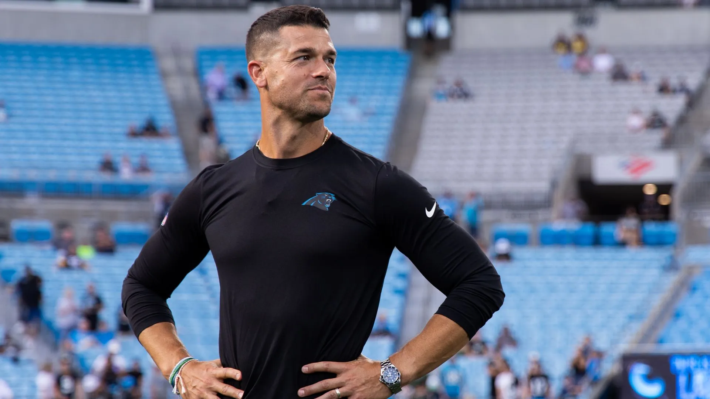
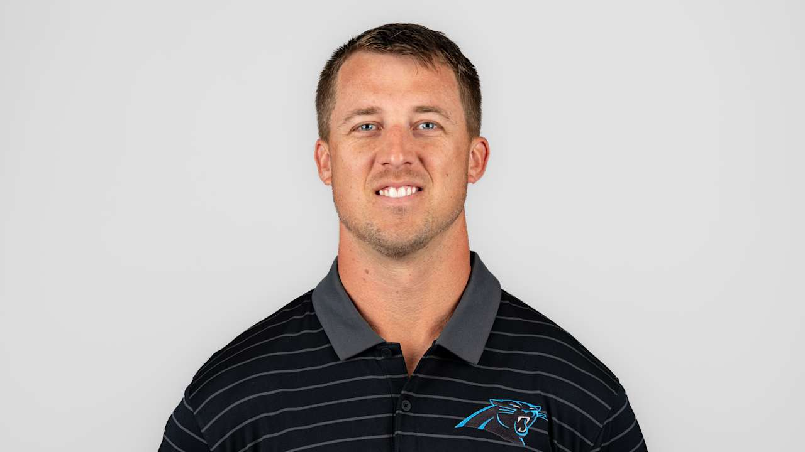
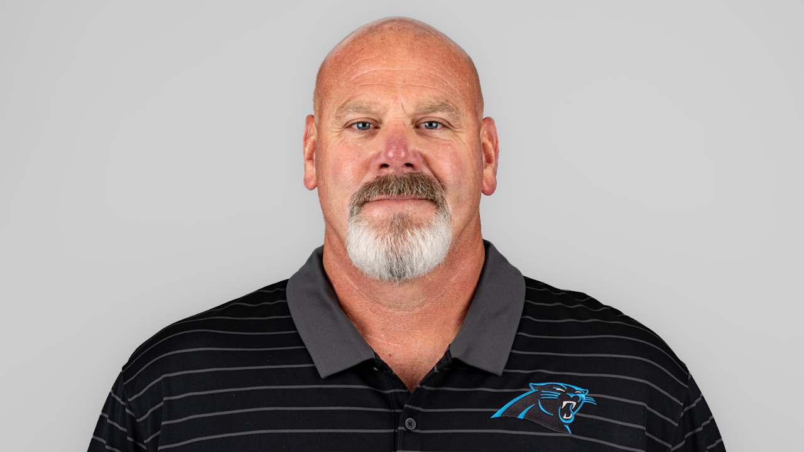
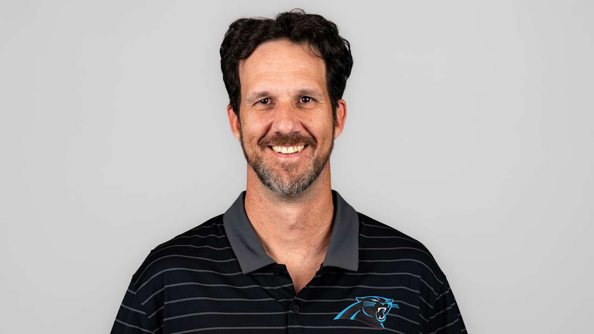

Carolina Panthers
Coaching Staff
Staff Tools
Head Coach

Dave Canales
- 3rd Year as Head Coach
- 7th head coach in franchise history
- Served as the offensive coordinator for the Tampa Bay Buccaneers
- Spent his first 13 seasons in the NFL with the Seattle Seahawks
Offensive Coordinator

Brad Idzik
- 3rd Year as Offensive Coordinator
Defensive Coordinator

Todd Walsh
- Interim Defensive Coordinator
Special Teams Coordinator

Tracy Smith
- 3rd Year as Special Teams Coordinator